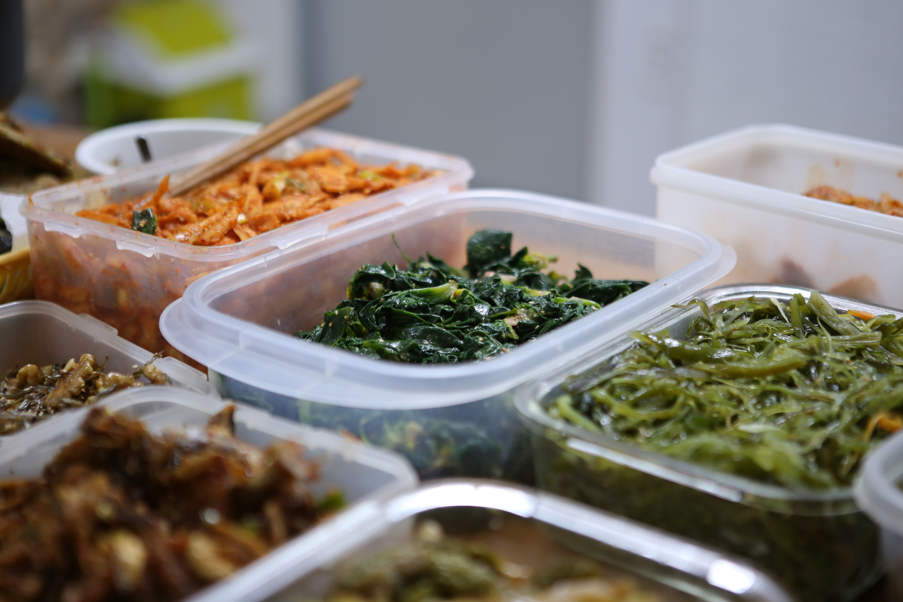

다이어트 식단의 핵심은 5대 영양소를 골고루 섭취하는 것입니다. 최근 유행하고 있는 다이어트 방법 중 원푸드 다이어트나 굶는 다이어트의 경우 영양소 불균형으로 인해서 단기간 체중 감량의 효과는 볼 수 있으나 기존의 식사를 다시 시작할 경우 요요가 올 수 있습니다.
그렇게 때문에 탄수화물, 단백질, 지방, 무기질, 비타민이 충분한 한식위주의 식단을 권장합니다
WHO에서 권장하는 나트륨 섭취량 대비 한국은 나트륨 섭취가 많기 때문에 짜고 자극적인 음식을 피하는 것이 좋습니다. 하지만 소금은 생명유, 심혈관 질환을 예방하는 영양소이기 때문에 무염식, 저염식이 아닌 적정 수준의 소금의 섭취가 중요하다. 일반적인 한식 반찬을 추천합니다.